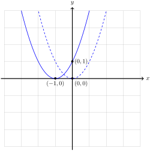

In this section, we study polynomial functions of degree 2. These polynomial functions are often called quadratic functions.
Subsection3.7.1Vertex Form
Definition3.7.1.Quadratic Function.
A function \(f \colon \R \to \R\) is quadratic if it has the form
\begin{equation*}
f(x) = ax^2 + bx + c
\quad\text{or}\quad
y = ax^2 + bx + c,
\end{equation*}
where \(a\text{,}\)\(b\text{,}\) and \(c\) are numbers, and \(a \neq 0\text{.}\)
Just as with lines, quadratic functions are easier to understand through visualizations. The simplest quadratic function to understand is \(y = x^2\text{.}\) We call the graph of \(y = x^2\) a parabola. The point \((0,0)\) is called the vertex.
As we have already seen in Section 2.4, the graph of this function is symmetric about the \(y\)-axis, which is the vertical line \(x = 0\) through the vertex. While general quadratics are slightly more complicated, we can use the properties of \(y = x^2\) to graph the class of quadratics in the following form.
Definition3.7.2.The Vertex Form of a Quadratic.
A quadratic function, \(f(x)\text{,}\) is in vertex form if there are numbers \(h\) and \(k\) such that
\begin{equation*}
f(x) = a(x - h)^2 + k.
\end{equation*}
Using the methods of Section 2.3, we can graph quadratics in this form by following the steps below.
Algorithm3.7.3.Graphing Quadratic Functions in Vertex Form.
To graph of the quadratic function \(y = a(x - h)^2 + k\)
Translate the graph of \(y = x^2\) horizontally by \(h\) units.
If \(0 \lt h\text{,}\) then the translation is to the right.
If \(h \lt 0\text{,}\) then the translation is to the left.
Scale the graph of \((x - h)^2\) by \(\abs{a}\text{.}\)
If \(1 \lt a\text{,}\) then the graph is stretched.
If \(a \lt 1\text{,}\) then the graph is compressed.
If \(a \lt 1\text{,}\) reflect the graph of \(\abs{a}(x - h)^2\) over the \(x\)-axis.
Translate the graph of \(a(x - h)^2\) vertically by \(k\) units.
If \(k \lt 0\text{,}\) then the translation is down.
If \(0 \lt k\text{,}\) then the translation is up.
Example3.7.4.
Graph the function \(f(x) = -2(x+1)^2 + 1\text{.}\)
Solution.
Following Algorithm 3.7.3, we perform the following operations on the graph of the function \(y = x^2\text{.}\)
Translate the graph of \(y = x^2\) to the left by 1 to obtain the graph of \(y = (x + 1)^2\text{.}\)
Stretch the graph of \(y = (x + 1)^2\) by a factor of 2 to obtain the graph of \(y = 2(x + 1)^2\text{.}\)
Reflect the graph of \(y = 2(x + 1)^2\) across the \(x\)-axis to obtain the graph of \(y = -2(x + 1)^2\text{.}\)
Translate the graph of \(y = -2(x + 1)^2\) up by 1 to obtain the graph of \(y = -2(x+1)^2 + 1\text{.}\)
These operations are shown below.
(a)Translate the graph of \(y = x^2\) to the left by \(1\)
(b)Stretch the graph of \(y = (x + 1)^2\) by a factor of \(2\)
(c)Reflect the graph of \(y = 2(x+1)^2\) across the \(x\)-axis
(d)Translate the graph of \(y = -2(x+1)^2\) up by \(1\)
Figure3.7.5.The transformations used to graph \(y = -2(x + 1)^2 + 1\text{.}\)
If we follow the vertex, we can see the first operation moves the point \((0,0)\) to \((h,0)\text{.}\) Since the point \((h,0)\) lies on the \(x\)-axis, the second and third operation do not move the point \((h,0)\text{.}\) The fourth operation moves the point \((h,0)\) to the point \((h,k)\text{.}\) Since these operations preserve the general shape of the graph, a quadratic function in the form
\begin{equation*}
y = a(x - h)^2 + k
\end{equation*}
is a parabola with vertex at \((h,k)\text{.}\) Hence the reason for the name vertex form.
Similarly, if we follow the line of symmetry for \(y = x^2\text{,}\) then we can see the first operation moves the vertical line \(x = 0\) to the vertical line \(x = h\text{.}\) The following three operations do not change the vertical line, so the graph of \(y = a(x - h)^2 + k\) is symmetric about the vertical line \(x = h\text{.}\)
Finally, we observe the third operation may change the direction in which the parabola opens.
Definition3.7.6.
The graph of a parabola is
concave up if the parabola opens upwards like \(y=x^2\text{.}\)
concave down if the parabola opens downwards like \(y = -x^2\text{.}\)
For quadratics in vertex form \(f(x) = a(x - h)^2 + k\text{,}\) we can see that \(f\) is concave up whenever \(0 \lt a\) and concave down whenever \(a \lt 0\text{.}\)
Subsection3.7.2Completing the Square
Surprisingly, every quadratic function can be placed into vertex form. Paired with the observations above, this tells us the graph of every quadratic function is a parabola. Placing a general quadratic function into vertex form will require the method of completing the square.
Remember that when we multiply two binomials, we must distribute. We can remember how to distribute using the mnemonic FOIL: First, Outer, Inner, Last:
Figure3.7.7.Multiplying binomials using the FOIL method.
If we use this method to multiply a binomial by itself, then we find the useful formula
In Section 1.6 we only encountered circles in standard form. However, circles will not always be presented this way. We study how the The Vertex Formula can help us to identify the equation of a circle, even if it is not presented in standard form.
Consider the equation \(x^2 - 4x + y^2 + 6x = -9.\) We can view \(f(x) = x^2 - 4x\) and \(g(y) = y^2 + 6x\) as quadratic functions in the variables \(x\) and \(y\text{,}\) respectively. The first coordinate of the vertex of \(f\) is
\begin{equation*}
h = -\frac{-4}{2} = \frac{4}{2} = 2
\end{equation*}